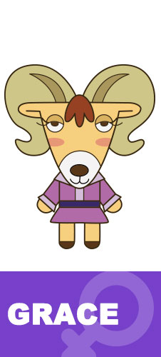

-
猪迪克 5岁、男孩，生日10月10日，天秤座，血型O 特点：真诚善良，天然萌，最可靠的伙伴。
猫牙 5岁、男孩，生日11月18日，天蝎座，血型AB型 特点：骄傲、争强好胜、自恋富二代。
LUCKY博士 故事中的反派，住在垃圾场的科学家。天蝎座。 特点：性格古怪、嫉妒心强、胆小的天才发明家。
大罗 5岁、射手座、男孩，生日11月15日，血型A 特点：大方、热情、好奇心强。
-
麦黄 5岁、男孩，生日8月10日，狮子座，血型O 特点：他直率、勇敢、力大无穷。
梦琪 5岁、女孩，生日3月1日，双鱼座，血型B型 特点：她开朗、善良，可爱的梦幻公主。
甜甜 5岁、女孩，生日6月1日，双子座，血型B型 特点：天真、活泼、爱漂亮。
呆呆 42岁、保安，生日4月26日，金牛座，血型O 白天任何时候都在打瞌睡，但是夜晚会变身,主要任务就是维持妙妙幼儿园的治安
-

高瑞斯 40岁、幼儿园院长，生日1月3日，摩羯座，血型B型 隐藏的先知，似乎身体不是太好，曾经在猪迪克迷茫的时候给予引导
安娜 28岁、幼儿园老师，生日10月13日，天枰座，血型AB型 猪迪克班的班主任，永远保持微笑的年轻老师，一直在期待被约会
梦娜 29岁、幼儿园营养师，生日3月5日，双鱼座，血型A 总是默默出现的神秘老师，非常爱走神
麦克 36岁、司机，生日12月28日，摩羯座，血型A 平时说话与行动都极其缓慢，一旦开车速度瞬间激增
-
田婶 36岁、白领，生日4月19日，白羊座，血型B型 未婚主义者，似乎与呆呆猫头鹰曾经有过恋情
阿康 39岁、现任市长，生日7月20日，巨蟹座，血型0型 保守派市长，对于变革持坚持反对态度，既阻碍了小镇的现代化进程同时也保住了小镇的原生态环境
华夫 35岁、警察局局长，生日11月30日，射手座，血型AB型 总是一副没睡醒样子的警长，除了幽灵什么都不怕，据说是呆呆猫头鹰的表弟
江楠 33岁、消防员，生日6月7日，双子座，血型B 热爱消防事业的热血青年，与安娜老师是表兄妹关系，非常欣赏猪迪克
-
希尔多夫 37岁、医院院长，生日11月15日，天蝎座，血型A型 神秘的医院院长，有着“救命手术刀”的称号，据说只要一出手就必定能救活伤者
艾米 22岁、护士，生日2月13日，水瓶座，血型B型 曾经想要当空姐，但最终成了名护士
肥林 28岁、体育老师，生日8月12日，狮子座，血型AB 著名棒球投手，退役后来到妙妙游泳池当了体育老师
智新 30岁、送奶员，生日9月21日，处女座，血型A 总是在担心牛奶过期，但又总是被诸多麻烦缠住，记性不太好，时常忘记猪迪克的名字
-
李昂 24岁、演员，生日5月15日，金牛座，血型AB型 超胆狮王的扮演者，是猪迪克与所有小伙伴们最崇拜的偶像
紫罗兰 29岁、花店老板，生日2月26日，双鱼座，血型0型 能够治愈一切植物，开花店的同时还在检测妙妙镇的环境变化
莱恩 35岁、书店老板，生日4月1日，白羊座，血型O 狡猾的商人，不惜用任何手段销售自己的商品，偶尔还要去别人的商店占些小便宜

哈利 28岁、便利店送货员，生日12月29日，摩羯座，血型A 一直在努力工作，攒够了钱后第一件要做的事情就是向小美求婚
-
小美 23岁、便利店收银员，生日10月23日，天枰座，血型A型 与男朋友一起经营一家便利店，一直在期待着男朋友向自己求婚
通通球 好奇。 博士发明的智能机器人，不但能飞行还能变形为皮球。但是通通球总是揭穿拉奇博士的失误，所以经常被拉奇博士痛扁。
小怪兽 淘气 由于博士与猪迪克一起养大的蝴蝶已经飞走了，所以博士才开发了这款名叫“小怪兽”的机器狗陪伴自己，没有语言功能，但是还比较听话。
introduction
故事简介
在美丽的妙妙镇上，居住着六个性格各异的小动物，他们是小猪“迪克”、小猫“猫牙”、小狗“大罗”、小牛“麦黄”、小猴子“梦琪”和小鸡“甜甜”. 在小镇的垃圾场，住着一个名叫“Lucky”的怪博士。他最讨厌的事就是看到别人过得比他快乐和幸福 ，所以发明了各种稀奇古怪的道具来试图破坏孩子们快乐的童年生活。而在这个过程中，孩子们也渐渐懂得了什么是友情、亲情，学会了什么是勇敢、自信和诚实，慢慢的明白“爱”的意义。
There, a beautiful town called MiaoMiao, live six little animals who are the piggy Dezico, the kitten Martin, the puppy Derek, the calf Umme, the little monkey Maggie and the chick Tiny. They are best friends and always study and play together. But in the dump of town, a freak inventor named Dr. Lucky is watching them. He is so lonely that makes him envy and hate any other people who have a better and happier life than him, particularly those six naïve kids. Attempting to destroy their pure and innocent childhood, Dr. Lucky plays lots of tricks to the kids with his various strange inventions. Through the battle of Defense of Innocence, the kids hold together and gradually understand what the Friendship and Kinship means, learn how to be brave, confident and honest. They gradually come to understand the meaning of Love.